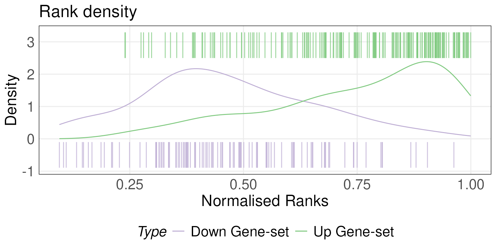
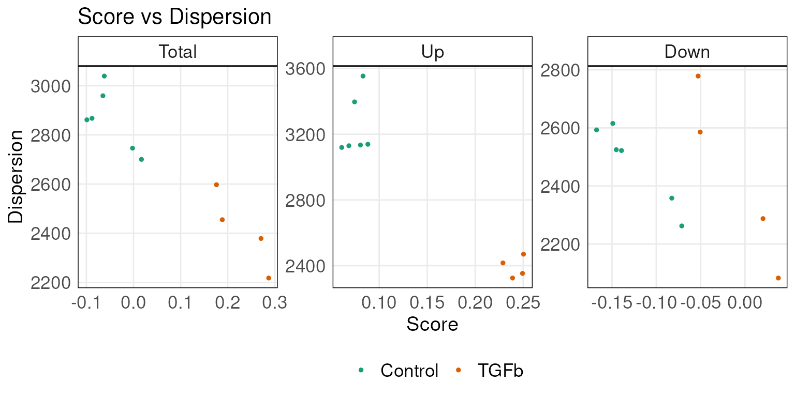
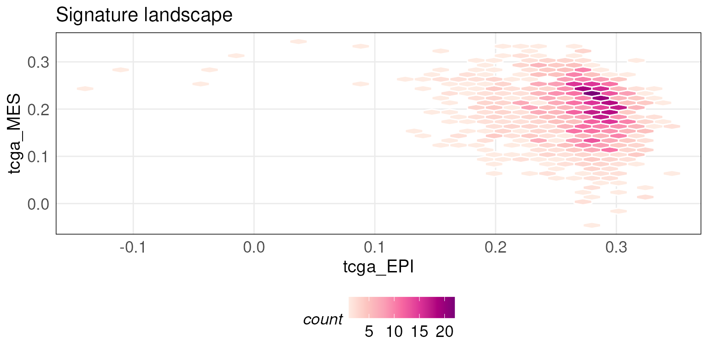
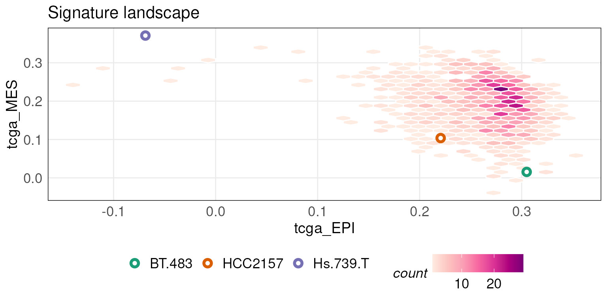
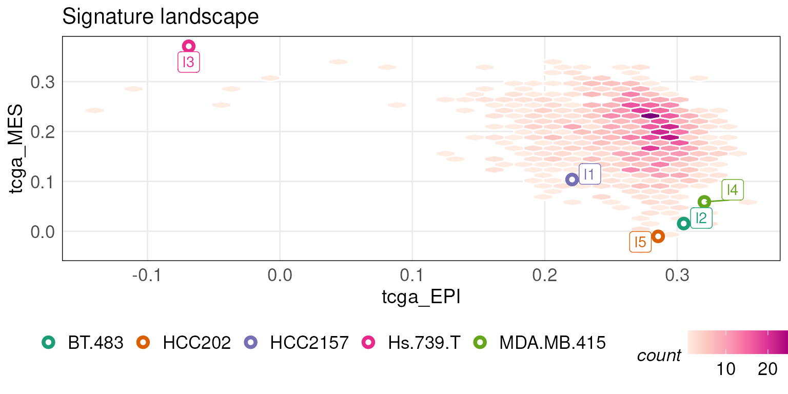
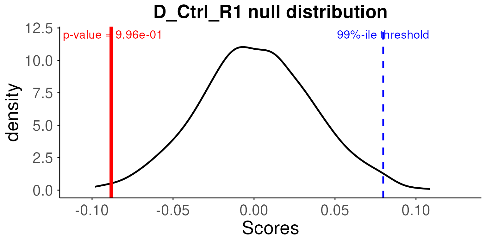
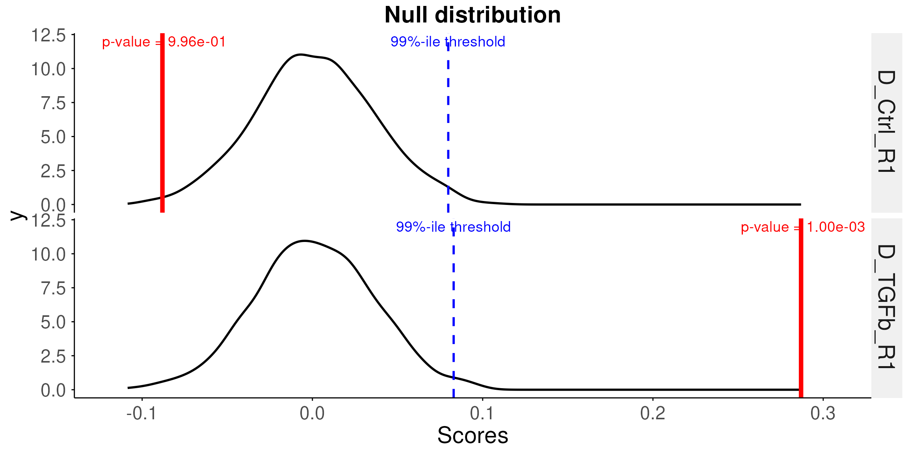

This vignette demonstrates how to use the functions in R package ‘singscore’ to score a gene expression dataset against a gene set at a single-sample level and provides visualisation functions to improve interpretation of the results.
Please cite the following papers when using this package:
citation('singscore')## To cite package 'singscore' in publications use:
##
## Foroutan M, Bhuva D, Lyu R, Horan K, Cursons J, Davis M (2018).
## "Single sample scoring of molecular phenotypes." _BMC
## bioinformatics_, *19*(1), 404. doi:10.1186/s12859-018-2435-4
## <https://doi.org/10.1186/s12859-018-2435-4>.
##
## Bhuva D, Cursons J, Davis M (2020). "Stable gene expression for
## normalisation and single-sample scoring." _Nucleic Acids Research_,
## *48*(19), e113. doi:10.1093/nar/gkaa802
## <https://doi.org/10.1093/nar/gkaa802>.
##
## To see these entries in BibTeX format, use 'print(<citation>,
## bibtex=TRUE)', 'toBibtex(.)', or set
## 'options(citation.bibtex.max=999)'.singscore implements a simple single-sample gene-set
(gene-signature) scoring method which scores individual samples
independently without relying on other samples in gene expression
datasets. It provides stable scores which are less likely to be affected
by varying sample and gene sizes in datasets and unwanted variations
across samples. The scoring method uses a rank-based statistics and is
quick to compute. For details of the methods please refer to the paper
(Foroutan et al. 2018). It also provides
various visualisation functions to further explore results of the
analysis.
Additional packages we have developed can enhance the singscore workflow:
msigdb
- A package that provides gene-sets from the molecular signatures
database (MSigDB) as a GeneSetCollection object that is
compatible with singscore.vissE
- A package that can summarise and aid in the interpretation of a list
of significant gene-sets identified by singscore (see tutorial).emtdata
- The full EMT dataset used in this tutorial (with additional EMT
related datasets).We have also published and made openly available the extensive
tutorials below that demonstrate the variety of ways in which
singscore can be used to gain a better functional
understanding of molecular data:
Install ‘singscore’ from Bioconductor
if (!requireNamespace("BiocManager", quietly=TRUE))
install.packages("BiocManager")
BiocManager::install("singscore")The most updated version of ‘singscore’ is hosted on GitHub and can
be easily installed using devtools::install_github()
function provided by devtools, (https://cran.r-project.org/package=devtools)
# You would need to install 'devtools' package first.
install.packages("devtools")
# And install the 'singscore' package from the GitHub repository
# 'singscore' requires these packages to be installed: methods, stats, graphics, ggplot2, ggsci, grDevices,
# ggrepel, plotly, tidyr, plyr, magrittr, reshape, edgeR, RColorBrewer, Biobase, GSEABase, BiocParallel
devtools::install_github('DavisLaboratory/singscore')
# Set build_vignette = TRUE if would like to browseVignette()#Scoring samples against a gene-set ## Load datasets
To illustrate the usage of ‘simpleScore()’, we first need to load the example datasets. The datasets used in this vignette have been built within the package. You can use the following scripts to load them into your R environment. Detailed steps of obtaining the full datasets are included at the end of the vignette. The ‘tgfb_expr_10_se’ dataset was obtained from [@Foroutanmolcanres.0313.2016] and it is a ten-sample subset of the original dataset. We are going to score the integrated TGFb-treated gene expression dataset (4 cases and 6 controls) against a TGFb gene signature with an up-regulated and down-regulated gene-set pair [@Foroutanmolcanres.0313.2016].
Gene-sets from the molecular signatures database (MSigDB) can be
accessed via our msigdb R/Bioconductor package (see vignette).
library(singscore)
library(GSEABase)
# The example expression dataset and gene signatures are included in the package
# distribution, one can directly access them using the variable names
# To see the description of 'tgfb_expr_10_se','tgfb_gs_up','tgfb_gs_dn', look at
# their help pages using:
# ?tgfb_expr_10_se
# ?tgfb_gs_up
# ?tgfb_gs_dn
# Have a look at the object tgfb_expr_10_se containing gene expression data
# for 10 samples
tgfb_expr_10_se## class: SummarizedExperiment
## dim: 11900 10
## metadata(0):
## assays(1): counts
## rownames(11900): 2 9 ... 729164 752014
## rowData names(0):
## colnames(10): D_Ctrl_R1 D_TGFb_R1 ... Hil_Ctrl_R1 Hil_Ctrl_R2
## colData names(1): Treatment
# Get the sample names by
colnames(tgfb_expr_10_se)## [1] "D_Ctrl_R1" "D_TGFb_R1" "D_Ctrl_R2" "D_TGFb_R2" "Hes_Ctrl_R1"
## [6] "Hes_TGFb_R1" "Hes_Ctrl_R2" "Hes_TGFb_R2" "Hil_Ctrl_R1" "Hil_Ctrl_R2"
# View what tgfb_gs_up/dn contains
tgfb_gs_up## setName: NA
## geneIds: 19, 87, ..., 402055 (total: 193)
## geneIdType: Null
## collectionType: Null
## details: use 'details(object)'
tgfb_gs_dn## setName: NA
## geneIds: 136, 220, ..., 161291 (total: 108)
## geneIdType: Null
## collectionType: Null
## details: use 'details(object)'## [1] 193## [1] 108To score samples, the gene expression dataset first needs to be
ranked using the rankGenes() function which returns a rank
matrix. This matrix along with the signatures are then passed to the
simpleScore() function which returns a data.frame
containing the scores for each sample. When only a single gene-set is
available (i.e. not an up- and down- regulated pair), the same function
can be called by setting the upSet argument to the
gene-set.
# The recommended method for dealing with ties in ranking is 'min', you can
# change by specifying 'tiesMethod' parameter for rankGenes function.
rankData <- rankGenes(tgfb_expr_10_se)
# Given the ranked data and gene signature, simpleScore returns the scores and
# dispersions for each sample
scoredf <- simpleScore(rankData, upSet = tgfb_gs_up, downSet = tgfb_gs_dn)
scoredf## TotalScore TotalDispersion UpScore UpDispersion DownScore
## D_Ctrl_R1 -0.088097993 2867.348 0.06096415 3119.390 -0.14906214
## D_TGFb_R1 0.286994210 2217.970 0.24931565 2352.886 0.03767856
## D_Ctrl_R2 -0.098964086 2861.418 0.06841242 3129.769 -0.16737650
## D_TGFb_R2 0.270721958 2378.832 0.25035661 2470.012 0.02036534
## Hes_Ctrl_R1 -0.002084788 2746.146 0.08046490 3134.216 -0.08254969
## Hes_TGFb_R1 0.176122839 2597.515 0.22894035 2416.638 -0.05281751
## Hes_Ctrl_R2 0.016883867 2700.556 0.08817828 3138.664 -0.07129441
## Hes_TGFb_R2 0.188466953 2455.186 0.23895473 2324.717 -0.05048778
## Hil_Ctrl_R1 -0.061991164 3039.330 0.08314254 3553.792 -0.14513371
## Hil_Ctrl_R2 -0.064937366 2959.270 0.07433863 3396.637 -0.13927600
## DownDispersion
## D_Ctrl_R1 2615.306
## D_TGFb_R1 2083.053
## D_Ctrl_R2 2593.067
## D_TGFb_R2 2287.652
## Hes_Ctrl_R1 2358.075
## Hes_TGFb_R1 2778.392
## Hes_Ctrl_R2 2262.448
## Hes_TGFb_R2 2585.654
## Hil_Ctrl_R1 2524.868
## Hil_Ctrl_R2 2521.903
# To view more details of the simpleScore, use ?simpleScore
# Note that, when only one gene set is available in a gene signature, one can
# only input values for the upSet argument. In addition, a knownDirection
# argument can be set to FALSE if the direction of the gene set is unknown.
# simpleScore(rankData, upSet = tgfb_gs_up, knownDirection = FALSE)The returned data.frame consists of the scores for the up- and down-
regulated gene-sets along with the combined score
(TotalScore). Dispersion is calculated using the
mad function by default and can be substituted by passing
another function to the dispersionFun argument in
simpleScore() such as IQR to calculate the
inter-quartile range.
Singscore requires transcriptome-wide measurements whereby all or most transcripts are measured. This is required to assess the expression of a gene in relation to the transcriptome. Panel-based transcriptomic assays measure a much smaller selection of transcripts therefore assessing the relative expression of each gene becomes a challenge. In such a setting, stably expressed genes can be used to assess relative expression. Expression of such genes is invariable across samples therefore they can be used to calibrate sample-wise gene expression measurements. This property allows for estimation of transcriptome-wide ranks with a small set of measurements inclusing a small set of stable genes. Detailed explanation of the rank estimation procedure using this logic is available in Bhuva et al. (2020) (manuscript in preparation).
Stably expressed genes in carcinoma transcriptomes and blood can be
obtained using the getStableGenes function.
#get the top 5 stable genes in carcinomas
getStableGenes(5, type = 'carcinoma')## [1] "RBM45" "BRAP" "CIAO1" "TARDBP" "HNRNPK"
#get the top 5 stable genes in blood
getStableGenes(5, type = 'blood')## [1] "RBM45" "BRAP" "GOSR1" "IWS1" "HNRNPK"
#get ensembl IDs instead of gene symbold
getStableGenes(5, type = 'carcinoma', id = 'ensembl')## [1] "ENSG00000155636" "ENSG00000089234" "ENSG00000144021" "ENSG00000120948"
## [5] "ENSG00000165119"This list can be used to score samples using a variant of singscore called stingscore.
#here we specify a custom set of genes (Entrez IDs)
stable_genes <- c('8315', '9391', '23435', '3190')
#create a dataset with a reduced set of genes (signature genes and stable genes)
measured <- unique(c(stable_genes, geneIds(tgfb_gs_up), geneIds(tgfb_gs_dn)))
small_tgfb_expr_10 <- tgfb_expr_10_se[measured, ]
dim(small_tgfb_expr_10)## [1] 305 10
#rank genes using stable genes
rankData_st <- rankGenes(small_tgfb_expr_10, stableGenes = stable_genes)
head(rankData_st)## D_Ctrl_R1 D_TGFb_R1 D_Ctrl_R2 D_TGFb_R2 Hes_Ctrl_R1 Hes_TGFb_R1
## 8315 0.2 0.2 0.2 0.2 0.2 0.2
## 9391 0.4 0.4 0.4 0.4 0.4 0.4
## 23435 0.6 0.6 0.6 0.6 0.6 0.6
## 3190 0.8 0.8 0.8 0.8 0.8 0.8
## 19 0.4 0.4 0.4 0.6 0.4 0.6
## 87 0.8 1.0 0.8 0.8 0.8 0.8
## Hes_Ctrl_R2 Hes_TGFb_R2 Hil_Ctrl_R1 Hil_Ctrl_R2
## 8315 0.2 0.2 0.2 0.2
## 9391 0.4 0.4 0.4 0.4
## 23435 0.6 0.6 0.6 0.6
## 3190 0.8 0.8 0.8 0.8
## 19 0.4 0.8 0.4 0.4
## 87 0.8 0.8 0.8 0.8
#score samples using stingscore
#simpleScore invoked with the new rank matrix will execute the stingscore
# algorithm
scoredf_st <- simpleScore(rankData_st, upSet = tgfb_gs_up, downSet = tgfb_gs_dn)
scoredf_st## TotalScore TotalDispersion UpScore UpDispersion DownScore
## D_Ctrl_R1 -0.04940510 0.14826 -0.10310881 0.29652 0.053703704
## D_TGFb_R1 0.27645366 0.14826 0.08756477 0.29652 0.188888889
## D_Ctrl_R2 -0.07259643 0.14826 -0.09481865 0.29652 0.022222222
## D_TGFb_R2 0.26430628 0.14826 0.08652850 0.29652 0.177777778
## Hes_Ctrl_R1 0.01732873 0.14826 -0.09378238 0.29652 0.111111111
## Hes_TGFb_R1 0.18121282 0.29652 0.06269430 0.29652 0.118518519
## Hes_Ctrl_R2 0.03176933 0.14826 -0.08860104 0.29652 0.120370370
## Hes_TGFb_R2 0.20667818 0.29652 0.08445596 0.29652 0.122222222
## Hil_Ctrl_R1 -0.05136250 0.14826 -0.06062176 0.29652 0.009259259
## Hil_Ctrl_R2 -0.03202840 0.14826 -0.06165803 0.29652 0.029629630
## DownDispersion
## D_Ctrl_R1 0.00000
## D_TGFb_R1 0.00000
## D_Ctrl_R2 0.00000
## D_TGFb_R2 0.00000
## Hes_Ctrl_R1 0.00000
## Hes_TGFb_R1 0.29652
## Hes_Ctrl_R2 0.00000
## Hes_TGFb_R2 0.29652
## Hil_Ctrl_R1 0.00000
## Hil_Ctrl_R2 0.00000
#plot the two scores against each other
plot(scoredf$TotalScore, scoredf_st$TotalScore)
abline(coef = c(0, 1), lty = 2)Scores computed using the classic singscore and the modified
stingscore will be similar (correlated if not equal) if the selection of
stable genes is good. Ideal stable genes will have stable gene
expression across the samples being investigated and should cover a wide
range of the expression spectrum. The genes produced by
getStableGenes fulfill these conditions. Our approach using
the product of ranks can be used to determine a set of stable genes for
a new context (manuscript in preparation).
In this section, we show example usages of the visualisation functions included in this package.
Scores of each sample are stored in scoredf. We can use
the plotRankDensity function to plot the ranks of genes in
the gene-sets for a specific sample. We plot the rank distribution for
the second sample in rankData which combines a density plot
(densities calculated using KDE) with a barcode plot. Please note that
since we are subsetting the data.frame rankData by one column, we set
drop = FALSE to maintain the structure of the
data.frame/matrix.
# You can provide the upSet alone when working with unpaired gene-sets
# We plot the second sample in rankData, view it by
head(rankData[,2,drop = FALSE])## D_TGFb_R1
## 2 1255
## 9 7611
## 10 1599
## 12 3682
## 13 3599
## 14 10013
plotRankDensity(rankData[,2,drop = FALSE], upSet = tgfb_gs_up,
downSet = tgfb_gs_dn, isInteractive = FALSE)## Warning: The dot-dot notation (`..density..`) was deprecated in ggplot2 3.4.0.
## ℹ Please use `after_stat(density)` instead.
## ℹ The deprecated feature was likely used in the singscore package.
## Please report the issue at
## <https://github.com/DavisLaboratory/singscore/issues>.
## This warning is displayed once every 8 hours.
## Call `lifecycle::last_lifecycle_warnings()` to see where this warning was
## generated.## Warning in geom_segment(aes(y = ymap[upDown], xend = Ranks, yend =
## yendmap[upDown], : Ignoring unknown aesthetics: text
Setting isInteractive = TRUE generates an interactive
plot using the plotly package. Hovering over the bars in
the interactive plot allows you to get information such as the
normalised rank (between 0 and 1) and ID of the gene represented by the
bar. For the rest of the plotting functions, the
isInteractive = TRUE argument has the same behavior.
Function plotDispersion generates the scatter plots of
the ‘score VS. dispersions’ for the total scores, the up scores and the
down score of samples. It requires the scored data.frame from
simpleScore function and annotations (via
annot parameter) can be used for coloring the points.
# Get the annotations of samples by their sample names
tgfbAnnot <- data.frame(SampleID = colnames(tgfb_expr_10_se),
Type = NA)
tgfbAnnot$Type[grepl("Ctrl", tgfbAnnot$SampleID)] = "Control"
tgfbAnnot$Type[grepl("TGFb", tgfbAnnot$SampleID)] = "TGFb"
# Sample annotations
tgfbAnnot$Type## [1] "Control" "TGFb" "Control" "TGFb" "Control" "TGFb" "Control"
## [8] "TGFb" "Control" "Control"
plotDispersion(scoredf,annot = tgfbAnnot$Type,isInteractive = FALSE)
# To see an interactive version powered by 'plotly', simply set the
# 'isInteractive' = TRUE, i.e :
#
# plotDispersion(scoredf,annot = tgfbAnnot$Type,isInteractive = TRUE)plotScoreLandscape plots the scores of the samples
against two different gene signatures in a landscape for exploring their
relationships.
There are two styles of the landscape plot (i.e scatter and hexBin
plot). When the number of samples in the gene expression dataset is
above the default threshold (100), plotScoreLandscape
generates a hex bin plot otherwise a scatter plot. The threshold can be
modified by changing the hexMin.
In order to better demonstrate the usage of
plotScoreLandscape, we load some additional datasets
consisting of pre-computed scores of larger public datasets.
scoredf_ccle_epi and scoredf_ccle_mes are two
scored results of a CCLE dataset (Barretina et
al. 2012) against an epithelial gene signature and mesenchymal
gene signature (Tan et al. 2014)
respectively. For details on how to obtain the dataset please see the
section at the end of the vignette.
plotScoreLandscape(scoredf_ccle_epi, scoredf_ccle_mes,
scorenames = c('ccle-EPI','ccle-MES'),hexMin = 10)Similarly, pre-computed scores for the TCGA breast cancer RNA-seq
dataset against epithelial and mesenchymal gene signatures are stored in
scoredf_tcga_epi and scoredf_tcga_mes
respectively (Tan et al. 2014). The
utility of this function is enhanced when the number of samples is
large.
tcgaLandscape <- plotScoreLandscape(scoredf_tcga_epi, scoredf_tcga_mes,
scorenames = c('tcga_EPI','tcga_MES'), isInteractive = FALSE)
tcgaLandscape
# To get an interactive version of plot, set isInteractive = TRUEYou can also project new data points onto the landscape plot
generated above by using the projectScoreLandscape
function. For example, the plot below overlays 3 CCLE samples onto the
TCGA epithelial-mesenchymal landscape. Points are labeled with their
sample names by default.
# Project on the above generated 'tcgaLandscape' plot
projectScoreLandscape(plotObj = tcgaLandscape, scoredf_ccle_epi,
scoredf_ccle_mes,
subSamples = rownames(scoredf_ccle_epi)[c(1,4,5)],
annot = rownames(scoredf_ccle_epi)[c(1,4,5)],
sampleLabels = NULL,
isInteractive = FALSE)## Warning in geom_point(aes(text = SampleText, colour = Class), shape = 21, :
## Ignoring unknown aesthetics: text
Custom labels can be provided by passing a character vector to the
sampleLabels argument.
projectScoreLandscape(plotObj = tcgaLandscape, scoredf_ccle_epi, scoredf_ccle_mes,
subSamples = rownames(scoredf_ccle_epi)[c(1,4,5,8,9)],
sampleLabels = c('l1','l2','l3','l4','l5'),
annot = rownames(scoredf_ccle_epi)[c(1,4,5,8,9)],
isInteractive = FALSE)## Warning in geom_point(aes(text = SampleText, colour = Class), shape = 21, :
## Ignoring unknown aesthetics: text
Hypothesis testing of the calculated scores is performed using a
permutation test. The null hypothesis is that the gene-set is not
enriched in the sample. For each sample, gene labels are randomly
shuffled and scores computed against the gene-set. This is done \(B\) times to generate the null
distribution. The generateNull() function computes these
for multiple samples (\(n\))
simultaneously resulting in an \(n \times
B\) matrix with permuted scores along the columns for each
sample.
The permutation function has parallel computing features provided by
using BiocParallel
# tgfb_gs_up : up regulated gene set in the tgfb gene signature
# tgfb_gs_dn : down regulated gene set in the tgfb gene signature
# This permutation function uses BiocParallel::bplapply() parallel function, by
# supplying the first 5 columns of rankData, we generate Null distribution for
# the first 5 samples.
# detect how many CPU cores are available for your machine
# parallel::detectCores()
ncores <- 1
# Provide the generateNull() function the number of cores you would like
# the function to use by passing the ncore parameter
permuteResult <-
generateNull(
upSet = tgfb_gs_up,
downSet = tgfb_gs_dn,
rankData = rankData,
subSamples = 1:5,
centerScore = TRUE,
knownDirection = TRUE,
B = 1000,
ncores = ncores,
seed = 1,
useBPPARAM = NULL
)
# Note here, the useBPPARAM parameter allows user to supply a BPPARAM variable
# as a parameter which decides the type of parallel ends to use.
# such as
# snow <- BiocParallel::SnowParam(type = "SOCK")
# permuteResult <- generateNull(upSet = tgfb_gs_up, downSet = tgfb_gs_dn,
# rankData[,1:5], B = 1000, seed = 1,ncores = ncores, useBPPARAM = snow)
# If you are not sure about this, just leave the value as NULL and set how many
# CPU cores to use via the ncores argument. It will use the default parallel
# backend for your machine.
# For more information, please see the help page for ?generateNull()
# Please also note that one should pass the same values to the upSet,
# downSet, centerScore and knownDirection arguments as what they provide
# for the simpleScore() function to generate a proper null distribution.
head(permuteResult)## D_Ctrl_R1 D_TGFb_R1 D_Ctrl_R2 D_TGFb_R2 Hes_Ctrl_R1
## 1 -0.03108049 -0.02355802 -0.03296665 -0.02552833 -0.02976792
## 2 0.05924161 0.05508062 0.05900367 0.05473372 0.05781921
## 3 -0.06808434 -0.06405468 -0.07658483 -0.06884367 -0.06999305
## 4 0.06030101 0.08181637 0.05814608 0.08205247 0.07089498
## 5 -0.05495649 -0.04898792 -0.06288874 -0.05624015 -0.05125311
## 6 0.04852306 0.03894352 0.05051753 0.03736856 0.04133476\(p\)-values can be estimated using
the getPvals() function by providing the null distributions
calculated above. Unless all permutations are exhausted (mostly
infeasible), the minimum \(p\)-value
obtained is \(\frac{1}{B}\).
pvals <- getPvals(permuteResult, scoredf, subSamples = 1:5)
# getPval returns p-values for each individual sample.
# show the p-values for first 5 samples
pvals## D_Ctrl_R1 D_TGFb_R1 D_Ctrl_R2 D_TGFb_R2 Hes_Ctrl_R1
## 0.996 0.001 0.999 0.001 0.530Plot the null distributions for the first sample with the estimated
\(p\)-value labelled. The function uses
the sampleNames parameter to decide which samples to
plot.

You can provide multiple sample names to plot these samples in one plot. For example, plot the first 2 samples.
# plot the null distributions for the first 2 samples and the p-values
# We can see from the plot, the control samples are not significant and TGFb
# samples are very significant with very low p-values
plotNull(permuteResult, scoredf, pvals, sampleNames = names(pvals)[1:2])## Using as id variables
TGFb-EMT data
In the examples above, we loaded a gene expression matrix data
tgfb_expr_10_se. This dataset is a ten-sample subset of a
full dataset originally from the integrated TGFb-EMT data published by
[@Foroutanmolcanres.0313.2016]. The full dataset can be accessed here https://figshare.com/articles/comBat_corrected_Foroutan_et_al_2017/5682862.
The tgfb_gs_up and tgfb_gs_dn are the derived
up-regulated/down-regulated genes of the TGFb-induced EMT gene signature
by [@Foroutanmolcanres.0313.2016] (see Table S1. TGFβ-EMT
signature).
CCLE dataset
scoredf_ccle_epi and scoredf_ccle_mes are
two data frames of the pre-computed scores using The Cancer Cell Line
Encyclopaedia (CCLE) breast cancer cell line RNA-seq dataset (Barretina et al. 2012). The CCLE dataset was
normalised by TPM and can be downloaded from https://www.synapse.org/#!Synapse:syn5612998 Cell lines
were scored against the epithelial and mesenchymal gene signatures,
which were obtained from (Tan et al. 2014)
and can be found in the ‘Table S1B. Generic EMT signature for cell line’
in the supplementary files.
TCGA cancer samples dataset
scoredf_tcga_epi and scoredf_tcga_mes are
two data frames of the pre-computed scores using The Cancer Genome Atlas
(TCGA) breast cancer RNA-seq data (RSEM normalised) (The Cancer Genome Atlas Network 2012) against
the epithelial and mesenchymal gene signatures respectively. The gene
signatures were obtained from (Tan et al.
2014) and can be found in the ‘Table S1A. Generic EMT signature
for tumour’. The TCGA dataset was downloaded from The UCSC Cancer
Genomics Browser in February 2016 (https://genome-cancer.ucsc.edu)
# preview the scored CCLE samples
head(scoredf_ccle_epi)## TotalScore TotalDispersion
## HCC2157 0.22060031 5926.693
## AU565 0.30387843 3884.412
## UACC.893 0.30615947 3527.847
## BT.483 0.30493150 4158.693
## Hs.739.T -0.06886754 4281.007
## HCC2218 0.31230039 3331.402
# preview the scored TCGA samples
head(scoredf_tcga_epi)## TotalScore TotalDispersion
## TCGA.3C.AAAU.01 0.2722128 3952.612
## TCGA.3C.AALI.01 0.3209824 2835.472
## TCGA.3C.AALJ.01 0.2531933 4174.260
## TCGA.3C.AALK.01 0.3042650 3234.292
## TCGA.4H.AAAK.01 0.2682847 4222.445
## TCGA.5L.AAT0.01 0.2560761 4132.747## R version 4.3.1 (2023-06-16)
## Platform: x86_64-pc-linux-gnu (64-bit)
## Running under: Ubuntu 22.04.2 LTS
##
## Matrix products: default
## BLAS: /usr/lib/x86_64-linux-gnu/openblas-pthread/libblas.so.3
## LAPACK: /usr/lib/x86_64-linux-gnu/openblas-pthread/libopenblasp-r0.3.20.so; LAPACK version 3.10.0
##
## locale:
## [1] LC_CTYPE=en_US.UTF-8 LC_NUMERIC=C
## [3] LC_TIME=en_US.UTF-8 LC_COLLATE=en_US.UTF-8
## [5] LC_MONETARY=en_US.UTF-8 LC_MESSAGES=en_US.UTF-8
## [7] LC_PAPER=en_US.UTF-8 LC_NAME=C
## [9] LC_ADDRESS=C LC_TELEPHONE=C
## [11] LC_MEASUREMENT=en_US.UTF-8 LC_IDENTIFICATION=C
##
## time zone: UTC
## tzcode source: system (glibc)
##
## attached base packages:
## [1] stats4 stats graphics grDevices utils datasets methods
## [8] base
##
## other attached packages:
## [1] GSEABase_1.62.0 graph_1.78.0 annotate_1.78.0
## [4] XML_3.99-0.14 AnnotationDbi_1.62.1 IRanges_2.34.1
## [7] S4Vectors_0.38.1 Biobase_2.60.0 BiocGenerics_0.46.0
## [10] singscore_1.19.1 BiocStyle_2.28.0
##
## loaded via a namespace (and not attached):
## [1] DBI_1.1.3 bitops_1.0-7
## [3] rlang_1.1.1 magrittr_2.0.3
## [5] matrixStats_1.0.0 compiler_4.3.1
## [7] RSQLite_2.3.1 png_0.1-8
## [9] systemfonts_1.0.4 vctrs_0.6.3
## [11] reshape2_1.4.4 stringr_1.5.0
## [13] pkgconfig_2.0.3 crayon_1.5.2
## [15] fastmap_1.1.1 XVector_0.40.0
## [17] labeling_0.4.2 utf8_1.2.3
## [19] rmarkdown_2.22 ragg_1.2.5
## [21] purrr_1.0.1 bit_4.0.5
## [23] xfun_0.39 zlibbioc_1.46.0
## [25] cachem_1.0.8 GenomeInfoDb_1.36.1
## [27] jsonlite_1.8.5 blob_1.2.4
## [29] highr_0.10 DelayedArray_0.26.3
## [31] reshape_0.8.9 BiocParallel_1.34.2
## [33] parallel_4.3.1 R6_2.5.1
## [35] bslib_0.5.0 stringi_1.7.12
## [37] RColorBrewer_1.1-3 limma_3.56.2
## [39] GenomicRanges_1.52.0 jquerylib_0.1.4
## [41] Rcpp_1.0.10 bookdown_0.34
## [43] SummarizedExperiment_1.30.2 knitr_1.43
## [45] Matrix_1.5-4.1 tidyselect_1.2.0
## [47] yaml_2.3.7 codetools_0.2-19
## [49] lattice_0.21-8 tibble_3.2.1
## [51] plyr_1.8.8 withr_2.5.0
## [53] KEGGREST_1.40.0 evaluate_0.21
## [55] desc_1.4.2 Biostrings_2.68.1
## [57] pillar_1.9.0 BiocManager_1.30.21
## [59] MatrixGenerics_1.12.2 generics_0.1.3
## [61] rprojroot_2.0.3 RCurl_1.98-1.12
## [63] ggplot2_3.4.2 munsell_0.5.0
## [65] scales_1.2.1 xtable_1.8-4
## [67] glue_1.6.2 tools_4.3.1
## [69] hexbin_1.28.3 locfit_1.5-9.8
## [71] fs_1.6.2 grid_4.3.1
## [73] tidyr_1.3.0 edgeR_3.42.4
## [75] colorspace_2.1-0 GenomeInfoDbData_1.2.10
## [77] cli_3.6.1 textshaping_0.3.6
## [79] fansi_1.0.4 S4Arrays_1.0.4
## [81] dplyr_1.1.2 gtable_0.3.3
## [83] sass_0.4.6 digest_0.6.32
## [85] ggrepel_0.9.3 farver_2.1.1
## [87] memoise_2.0.1 htmltools_0.5.5
## [89] pkgdown_2.0.7.9000 lifecycle_1.0.3
## [91] httr_1.4.6 bit64_4.0.5